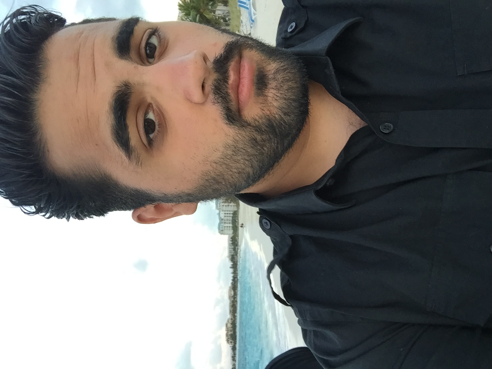

Jawed Tajzai

Summary:
My name is Jawed Tajzai and I'm an aspiring web developer. My dream is to become a full stack developer. I'm a huge gamer and so my dream is to working for a gaming company, preferably, Blizzard.
Skills:
- Proficient in HTML, CSS, JavaScript, Adobe Photoshop and Illustrator
- Skilled in identifying customer needs and resolving issues promptly and
effectively, ensuring customer satisfaction and retention.
- Proficient at managing multiple tasks simultaneously while maintaining
attention to detail and delivering high-quality service within established
timeframes
- Collaborative team player with the ability to work effectively with
colleagues to achieve common goals and provide seamless service
experiences for customers.
- Flexible and adaptable to changing priorities and environments, with a
willingness to learn and grow in a dynamic customer service setting.
Education:
Montgomery College
- Web Development, GPA 4.0 | Graduated 2022
- Deans List Spring 2022 Semester
- Web Development Certificate
Work:
QUEVERA
2023 - IT Specialist
- Maintain equipment inventory of all desktops, monitors, laptops, etc
- Collaborate with development teams via tickets and JIRA
- Perform DNS and Email migration from on-premise to cloud
- Maintain switch and firewalls, along with WIFI
- Troubleshooting user’s desktop with applications and OS
AZNA Hair Salon
2018 - 2023 Co-Owner and Front House Operations
- Managed payroll for all employees
- Managed product inventory
- Managed social networks; Twitter, Facebook, Instagram, and Google
- Handled recruiting and interviews of all employees
Aspen Hill Club
2016 - 2018 Front Desk Coordinator
- Managed calendars for sporting programs
- Managed incoming calls and directed to appropriate departments
- Maintained and organized sporting inventory
- Responsible for opening and closing the facility
MotorFiend
2012 - 2014 Customer Service Representative
- Managed social networks; Twitter, Facebook, Instagram, and Tumblr
- Assisted in SEO work for the website
- Organized a fashion directory compiling of over 2000 images with short summaries
- Provided consumer customer service
- Interviewed up and coming brands
EQUNIU
2008 - 2012 Co-Owner and Blogger for Online Fashion Magazine
- Assisted in website development and design
- Successfully SEO the site resulting in an influx of unique visitors
- Managed multi-channel marketing; Twitter, Facebook, Instagram, Google, and Tumblr
- Held responsibilities in project management. Created schedules forvemployees to meet deadlines and trained incoming employees